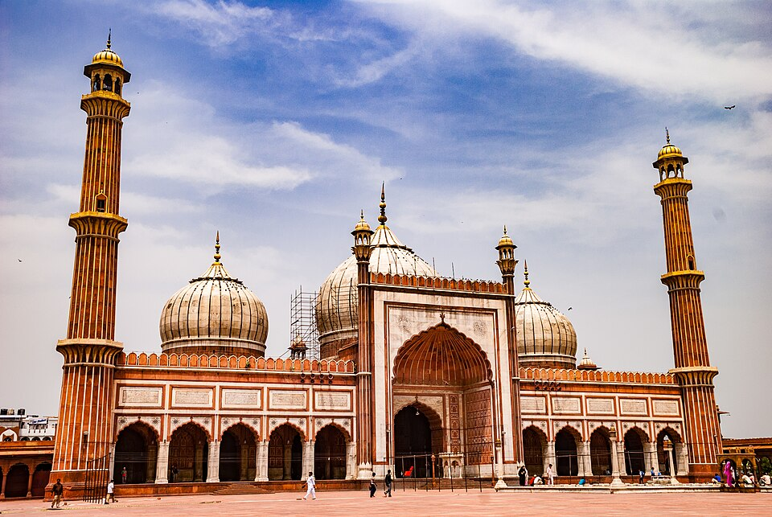

Jharkhand (Hindi: Jhārakhaṇḍa, pronounced [d͡ʒʱäːɾᵊkʰəɳɖᵊ]; lit. 'the land of forests') is a state in eastern
India. The state shares its border with the states of West Bengal to the east, Chhattisgarh to the west,
Uttar Pradesh to the northwest, Bihar to the north and Odisha to the south. It is the 15th largest state by
area, and the 14th largest by population. Hindi is the official language of the state.The city of Ranchi is
its capital and Dumka its sub-capital. The state is known for its waterfalls, hills and holy places; Baidyanath
Dham, Parasnath, Dewri and Rajrappa are major religious sites. Jharkhand is primarily rural, with about
24% of its population living in cities as of 2011.
Jharkhand suffers from what is sometimes termed a resource curse: it accounts for more than 40% of India's
mineral production but 39.1% of its population is below the poverty line and 19.6% of children under five years
of age are malnourished.
